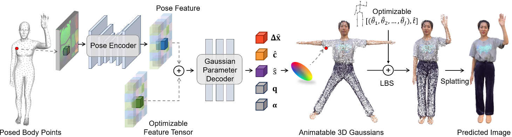

GaussianAvatar: Towards Realistic Human Avatar Modeling from a Single Video via Animatable 3D Gaussians
核心问题是什么?
目的
输入：单个视频 输出：具有动态 3D 外观的逼真人类头像 目的：实现自由视角渲染，生成逼真人类头像动画
本文方法
- 引入可动画化的 3D GS 来明确代表各种姿势和服装风格的人类。
- 设计一个动态外观网络以及一个可优化的特征张量，用于实现运动到外观的映射。通过动态属性进一步增强3D GS表示。
- 对运动和外观进行联合优化，缓解『单目视频中运动估计不准确』的问题。
效果
GaussianAvatar的功效在公共数据集和我们收集的数据集上都得到了验证，证明了其在外观质量和渲染效率方面的优越性能。
核心贡献是什么？
-
3D高斯表示法（3D Gaussians）：论文提出了使用3D高斯来显式表示不同姿势和服装样式下的人体。这种方法可以有效地从2D观察中融合3D外观。
-
动态属性建模：为了支持不同姿势下的动态外观建模，论文设计了一个动态外观网络和可优化的特征张量，以学习运动到外观的映射。
-
运动和外观的联合优化：利用可微分的运动条件，论文的方法可以在化身建模过程中同时优化运动和外观，有助于解决单目设置中不准确运动估计的长期问题。
-
实现细节：论文详细介绍了如何通过3D高斯表示法来重建具有动态外观的人体化身，包括如何将3D高斯与SMPL或SMPL-X模型集成，以及如何通过动态外观网络预测3D高斯的动态属性。
-
训练策略：论文提出了一个两阶段的训练策略，首先在不包含姿势依赖信息的情况下训练网络，然后在第二阶段整合姿势特征编码。
大致方法是什么？

给定当前帧上拟合的 SMPL 模型，我们对其表面上的点进行采样，并将它们的位置记录在 UV 位置图 I 上，然后将其传递给姿势编码器以获得姿势特征。可优化的特征张量与姿势特征进行像素对齐，并学会捕捉人类的粗糙外观。然后将两个对齐的特征张量输入到高斯参数解码器中，该解码器预测每个点的偏移量 Δx、颜色 c 和尺度 s。这些预测与固定旋转 q 和不透明度 α 一起构成了规范空间中的可动画化 3D 高斯。
Animatable 3D Gaussians 可驱动的3D高斯
先预测高斯属性，然后用LBS驱动这个高斯球，渲染驱动后的高斯球。
Mesh以SMPL为template，且Mesh上的每个顶点对应一个高斯球，因此LBS的蒙皮绑定直接复用SMPL的。
动态 3D 高斯属性估计
- 根据pose预测高斯属性，可得到与pose相关的动态高斯属性。
- 属性pose feature，还有feature tensor，用于描述global appreance，防止对动作过拟合。
- pose feature通过UV map（H×W×3，其中每个有效像素存储姿势身体表面上一个点的位置（x，y，z）），描述2D人体。
- 用各向同性（旋转和缩放均为单位值）的高斯球代替各向异性的高斯球，防止陷入特定视角的local optima(训练数据的视角数据不均等)。
- 固定alpha=1，以获得更准确的高高斯球位置。
class ShapeDecoder(nn.Module):
'''
The "Shape Decoder" in the POP paper Fig. 2. The same as the "shared MLP" in the SCALE paper.
- with skip connection from the input features to the 4th layer's output features (like DeepSDF)
- branches out at the second-to-last layer, one branch for position pred, one for normal pred
'''
def __init__(self, in_size, hsize = 256, actv_fn='softplus'):
self.hsize = hsize
super(ShapeDecoder, self).__init__()
self.conv1 = torch.nn.Conv1d(in_size, self.hsize, 1)
self.conv2 = torch.nn.Conv1d(self.hsize, self.hsize, 1)
self.conv3 = torch.nn.Conv1d(self.hsize, self.hsize, 1)
self.conv4 = torch.nn.Conv1d(self.hsize, self.hsize, 1)
self.conv5 = torch.nn.Conv1d(self.hsize+in_size, self.hsize, 1)
self.conv6 = torch.nn.Conv1d(self.hsize, self.hsize, 1)
self.conv7 = torch.nn.Conv1d(self.hsize, self.hsize, 1)
self.conv8 = torch.nn.Conv1d(self.hsize, 3, 1)
self.conv6SH = torch.nn.Conv1d(self.hsize, self.hsize, 1)
self.conv7SH = torch.nn.Conv1d(self.hsize, self.hsize, 1)
self.conv8SH = torch.nn.Conv1d(self.hsize, 3, 1)
self.conv6N = torch.nn.Conv1d(self.hsize, self.hsize, 1)
self.conv7N = torch.nn.Conv1d(self.hsize, self.hsize, 1)
self.conv8N = torch.nn.Conv1d(self.hsize, 1, 1)
self.bn1 = torch.nn.BatchNorm1d(self.hsize)
self.bn2 = torch.nn.BatchNorm1d(self.hsize)
self.bn3 = torch.nn.BatchNorm1d(self.hsize)
self.bn4 = torch.nn.BatchNorm1d(self.hsize)
self.bn5 = torch.nn.BatchNorm1d(self.hsize)
self.bn6 = torch.nn.BatchNorm1d(self.hsize)
self.bn7 = torch.nn.BatchNorm1d(self.hsize)
self.bn6N = torch.nn.BatchNorm1d(self.hsize)
self.bn7N = torch.nn.BatchNorm1d(self.hsize)
self.bn6SH = torch.nn.BatchNorm1d(self.hsize)
self.bn7SH = torch.nn.BatchNorm1d(self.hsize)
self.actv_fn = nn.ReLU() if actv_fn=='relu' else nn.Softplus()
self.sigmoid = nn.Sigmoid()
self.tan = nn.Tanh()
def forward(self, x):
x1 = self.actv_fn(self.bn1(self.conv1(x)))
x2 = self.actv_fn(self.bn2(self.conv2(x1)))
x3 = self.actv_fn(self.bn3(self.conv3(x2)))
x4 = self.actv_fn(self.bn4(self.conv4(x3)))
x5 = self.actv_fn(self.bn5(self.conv5(torch.cat([x,x4],dim=1))))
# position pred
x6 = self.actv_fn(self.bn6(self.conv6(x5)))
x7 = self.actv_fn(self.bn7(self.conv7(x6)))
x8 = self.conv8(x7)
# scales pred
xN6 = self.actv_fn(self.bn6N(self.conv6N(x5)))
xN7 = self.actv_fn(self.bn7N(self.conv7N(xN6)))
xN8 = self.conv8N(xN7)
# shs pred
xSH6 = self.actv_fn(self.bn6SH(self.conv6SH(x5)))
xSH7 = self.actv_fn(self.bn7SH(self.conv7SH(xSH6)))
xSH8 = self.conv8SH(xSH7)
# rotations = xN8[:,:4,:]
scales = self.sigmoid(xN8)
# scales = -1 * self.actv_fn(xN8[:,4:7,:])
# opacitys = self.sigmoid(xN8[:,7:8,:])
shs = self.sigmoid(xSH8)
return x8, scales, shs
动作与外观联合优化
由于对人体姿势的不精确估计，运动空间中的 3D 高斯分布不准确，可能导致渲染结果不令人满意。
因此同时优化动作和高斯属性。
训练与验证
第一阶段：仅输入feature tensor F，使用Encoder & Decoder解出高斯属性，用SMPL拟合所得到的动作驱动高斯，重建图像
def train_stage1(self, batch_data, iteration):
# 从batch中提取角色当前帧的rotation和translation
pose_batch, transl_batch = ..., ...
# 用LBS驱动角色，得到驱动后的mesh
live_smpl = self.smpl_model.forward(betas=self.betas,
global_orient=pose_batch[:, :3],
transl = transl_batch,
body_pose=pose_batch[:, 3:])
# 提前算好LBS矩阵
cano2live_jnt_mats = torch.matmul(live_smpl.A, self.inv_mats)
# geo_feature是要被优化的变量，代表了这个对象的统一的特征
geom_featmap = self.geo_feature.expand(self.batch_size, -1, -1, -1).contiguous()
# 对template mesh进行采样并在 UV 位置图 I 上记录它们的位置，用于建立像素到3D空间的映射。
uv_coord_map = self.uv_coord_map.expand(self.batch_size, -1, -1).contiguous()
# 根据uv coord map和feature tensor预测高斯属性
# pred_res: 3d position offset
# pred_shs：球协系数
pred_res,pred_scales, pred_shs, = self.net.forward(pose_featmap=None,
geom_featmap=geom_featmap,
uv_loc=uv_coord_map)
pred_res = pred_res.permute([0,2,1]) * 0.02 #(B, H, W ,3)
pred_point_res = pred_res[:, self.valid_idx, ...].contiguous()
# query_points：canomical mesh表面的采样点的位置
# pred_point_res：canomical mesh表面采样点的offset
cano_deform_point = pred_point_res + self.query_points
# offset是加在template上的，然后再lbs，得到deformed mesh
pt_mats = torch.einsum('bnj,bjxy->bnxy', self.query_lbs, cano2live_jnt_mats)
full_pred = torch.einsum('bnxy,bny->bnx', pt_mats[..., :3, :3], cano_deform_point) + pt_mats[..., :3, 3]
if iteration < 1000:
# 一开始预测出的scale偏大，所以这样限制一下
pred_scales = pred_scales.permute([0,2,1]) * 1e-3 * iteration
else:
pred_scales = pred_scales.permute([0,2,1])
# 维度对齐相关代码省略
...
# 正则化loss
offset_loss = torch.mean(pred_res ** 2)
geo_loss = torch.mean(self.geo_feature**2)
scale_loss = torch.mean(pred_scales)
# 渲染需要逐张进行
for batch_index in range(self.batch_size):
# 取出每一张图像的渲染参数
FovX = batch_data['FovX'][batch_index]
FovY = batch_data['FovY'][batch_index]
height = batch_data['height'][batch_index]
width = batch_data['width'][batch_index]
world_view_transform = batch_data['world_view_transform'][batch_index]
full_proj_transform = batch_data['full_proj_transform'][batch_index]
camera_center = batch_data['camera_center'][batch_index]
points = full_pred[batch_index]
colors = pred_shs[batch_index]
scales = pred_scales[batch_index]
# 进行渲染
rendered_images.append(
render_batch(
points=points,
shs=None,
colors_precomp=colors,
rotations=self.fix_rotation,
scales=scales,
opacity=self.fix_opacity,
FovX=FovX,
FovY=FovY,
height=height,
width=width,
bg_color=self.background,
world_view_transform=world_view_transform,
full_proj_transform=full_proj_transform,
active_sh_degree=0,
camera_center=camera_center
)
)
return torch.stack(rendered_images, dim=0), full_pred, offset_loss, geo_loss, scale_loss
第二阶段：使用pose encoder和同时作为输入，decoder出高斯属性，用SMPL拟合所得到的动作驱动高斯，重建图像
def train_stage2(self, batch_data, iteration):
# 与train_stage1相同
...
# 与train_stage1的区别在于推断时引入pose feature map
# 这里跟论文不一致，论文是根据uv_coord_map计算pose feature map
# inp_pos_map是提前算预计算好的，代表什么含义？
inp_posmap = batch_data['inp_pos_map']
pose_featmap = self.pose_encoder(inp_posmap)
pred_res,pred_scales, pred_shs, = self.net.forward(pose_featmap=pose_featmap,
geom_featmap=geom_featmap,
uv_loc=uv_coord_map)
# 与train_stage1相同
...
goem feature与pose feature是相加的关系
if pose_featmap is None:
# pose and geom features are concatenated to form the feature for each point
pix_feature = geom_featmap
else:
pix_feature = pose_featmap + geom_featmap
| Loss | 优化目的 | 方法 | 阶段 |
|---|---|---|---|
| rgb | 图像重建 | L1 Loss | 1,2 |
| ssim | SSIM Loss | 1,2 | |
| lpips | LPIPS Loss | 1,2 | |
| f | feature map | L2 Loss | 1 |
| offset | L2 | 1,2 | |
| scale | L2 | 1,2 | |
| p | limit the pose space | L2 | 2 |
数据集
People-Snapshot Dataset
NeuMan Dataset.
DynVideo Dataset
Evaluation Metrics.
loss
训练策略
实验


局限性
可能因视频中前景分割不准确而产生伪影，并且在建模宽松服饰（如连衣裙）方面遇到挑战。
相似工作对比（原创）
相同点：3D GS based 4D 生成 对比：
| 本文 | Dreamgaussian4d | |
|---|---|---|
| 外观信息 | reference video | reference image |
| 动作信息 | reference video | I2V 生成 或预置 |
| 外观提取3D GS | 联合优化得出高斯属性 | DreamGaussianHD |
| 动作信息提取 | 单目视频动捕 + 联合优化 | 隐式地优化学习 |
| 驱动方式 | LBS显式驱动 + 3DGS动态属性 LBS的驱动方式使方法受限于特定的绑定格式 | HexPlane显式驱动 |
| 优化对象 | 1. 静态高斯属性 2. 动作参数 3. 动态外观网络（生成动态高斯属性） 4. 一个可优化的特征张量 | 1. HexPlane运动信息 2.静态高斯属性(Optional) |
遗留问题
参考材料
- 代码和数据集：https://huliangxiao.github.io/GaussianAvatar